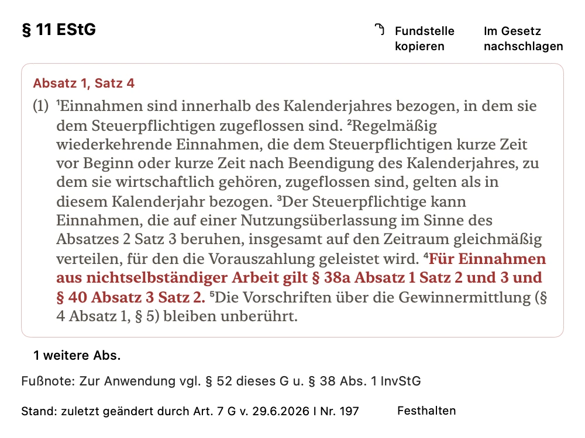
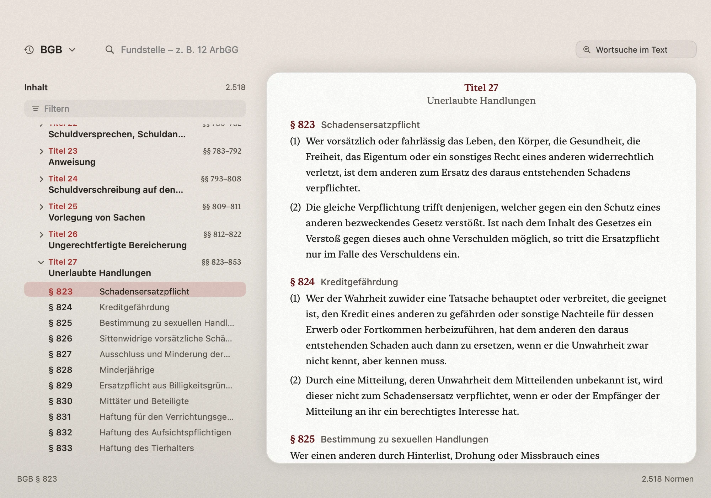
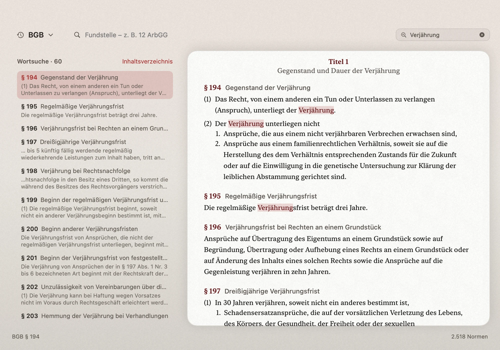
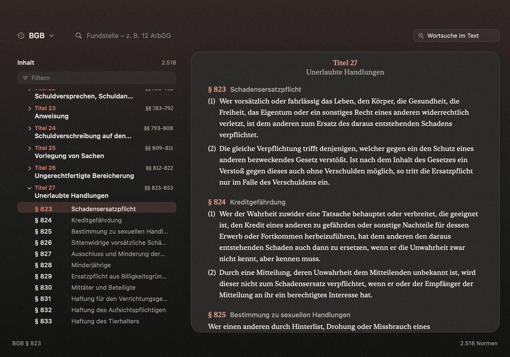

⌃⌘L
Aus der Zwischenablage
Fundstelle kopieren. Control-Cmd-L (⌃⌘L) drücken. Normblick schlägt den kopierten Verweis nach.
Die native Mac-App für Gesetzesfundstellen
Wahltaste halten. Fundstelle erkennen. Mit einem Klick den amtlichen Wortlaut öffnen, bis zum Satz hervorgehoben.

macOS 26 oder neuer Apple Silicon
Aktuell in der Testphase. Noch kein App-Store-Release.
Im PDF, im Schriftsatz oder in einer anderen App: Normblick liest die Fundstelle dort, wo Sie gerade arbeiten.
Zum Beispiel § 11 Abs. 1 S. 4 EStG
Halten Sie ⌥ gedrückt. Die OCR-Lupe erscheint und erkennt die Fundstelle unter dem Mauszeiger.
Erst Ihr Klick öffnet den amtlichen Wortlaut. Das Halten der Taste allein öffnet noch keinen Text.
Absatz und Satz werden im Text hervorgehoben. Lassen Sie die Wahltaste los, wird die Lupe ausgeblendet.
Für einen Satz genügt das Ergebnisfenster. Für den Zusammenhang gibt es den lokalen Gesetzesbrowser mit Paragraphenliste und Suche.

§ 823 BGB, im Kontext. Paragraphenliste und amtlicher Text nebeneinander.
Vergrößern
Nach Worten suchen. „Schadensersatz“ im BGB, mit Treffern und zugehörigem Text.
Vergrößern
Hell oder dunkel. Derselbe Wortlaut, dieselbe Orientierung.
VergrößernBis zum einzelnen Satz. Die zitierte Stelle wird im umgebenden Absatz markiert.
VergrößernLokal auf Ihrem Mac
Die OCR-Erkennung, die Normsuche und der Gesetzesbestand liegen auf dem Gerät. Der Wortlaut ist auch ohne Internetverbindung erreichbar.
Normblick nutzt eine lokale SQLite-Datenbank. OCR und Normsuche erfolgen lokal, ohne Telemetrie.
Beim Einrichten erlauben Sie Bildschirmaufnahme und Bedienungshilfen. Diese Berechtigungen ermöglichen die Lupe und ihre Bedienung.
Offline gilt für das Nachschlagen. Externe Quellenlinks, Updates oder eine E-Mail-Anfrage sind separate Vorgänge.
Datenbestand September 2026:
382.015 Einträge aus 19 Quellen.
Weitere Wege in den amtlichen Text, passend zu Ihrer Arbeitsweise.
Fundstelle kopieren. Control-Cmd-L (⌃⌘L) drücken. Normblick schlägt den kopierten Verweis nach.
Eine App-Fundstelle in Spotlight auswählen. Normblick öffnet das Gesetz an der zugehörigen Stelle.
Vor dem ersten Nachschlagen.
Normblick ist eine native macOS-Menüleisten-App für macOS 26 oder neuer und Apple Silicon.
Es gibt derzeit noch keinen App-Store-Release und keinen öffentlichen Downloadlink. Sie können per E-Mail an studio@luneq.eu einen Testzugang anfragen.
Preise und das endgültige Angebot stehen noch nicht fest.
Nein. Halten Sie die Wahltaste, erscheint die OCR-Lupe und erkennt die Fundstelle unter dem Mauszeiger. Erst ein Klick bestätigt den Treffer und öffnet den Wortlaut. Loslassen blendet die Lupe aus.
Beim Einrichten müssen Bildschirmaufnahme und Bedienungshilfen erlaubt werden. OCR-Erkennung und Normsuche laufen lokal auf Ihrem Mac.
Sie können den lokalen Bestand durchsuchen und Normen nachschlagen. Die lokale SQLite-Datenbank, OCR und Normsuche brauchen dafür keine Verbindung. Externe Quellenlinks, Updates und E-Mail sind davon getrennt.
Der aktuelle Bestand umfasst Bundesrecht, Landesrecht aller 16 Länder, ausgewählte EU-Rechtsakte und die EMRK. Das ist keine vollständige Abdeckung des EU-Rechts oder jeder denkbaren Norm.
Datenbestand September 2026: 382.015 Einträge aus 19 Quellen.
Nein. Normblick dient zum Nachschlagen und bietet keine Rechtsberatung. Prüfen Sie Rechtsstand, Anwendbarkeit und die zugehörigen Quellen selbst.
Die App ist in der Testphase. Schreiben Sie an Luneq Studio, um einen Testzugang anzufragen.
Testzugang anfragenÖffnet Ihr E-Mail-Programm mit vorbereitetem Betreff.
macOS 26 oder neuer, Apple Silicon.